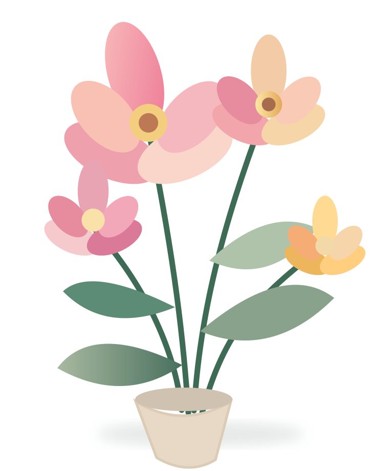

La voix de la création floraleLa création
La création
fleurit ici.
Inspiration, savoir-faire et rencontres : un nouvel espace pour celles et ceux qui font vivre le monde floral.
✳Fleuristes, designers floraux,
professionnels et talents de demain.
professionnels et talents de demain.


Le floralen grand.✳
CRÉER / APPRENDRE / PARTAGERUn média, mille façons de s’inspirer.Découvrir ↓
Art floral✳Créativité✳Rencontres✳Savoir-faire✳Durabilité✳Nouvelle génération✳
01 / ExplorerUn univers qui
Un univers qui
se réinvente.
Les idées, les techniques et les personnalités qui font avancer le monde floral, réunies dans une expérience plus simple et plus vivante.

02 / Le regard FloreviewLes histoires qui
Tout le journal ↗Les histoires qui
font éclore demain.

Faire fleurir les idées ✺
03 / L'humain au cœurLe savoir-faire
Le savoir-faire
se transmet.
Fleuristes confirmés, artisans émergents, passionnés de nature : Floreview met en lumière les talents et encourage le partage des connaissances.
Interviews & rencontres ↗Techniques et formations ↗Talents de demain ↗
Découvrir la mission ↗Rejoignez le mouvementPlus qu'un regard.
Plus qu'un regard.
Une communauté.
Accédez à davantage de ressources, de conseils et d’inspirations pour faire grandir votre pratique.
Découvrir l’adhésion ↗